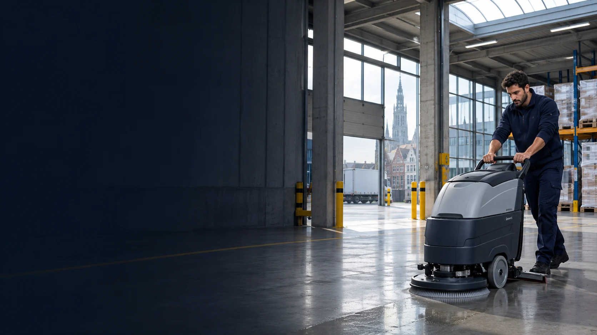

Schoonmaak voor bedrijven · West- en Oost-Vlaanderen
Een propere werkplek, zonder dat je er omkijken naar hebt.
Ramen, gevels en zonnepanelen. Kantoren, winkels en bedrijfshallen. V CLEAN plant, voert uit en volgt op.
- Eén vaste contactpersoon
- Vaste ploeg per locatie
- Vervanging geregeld door V CLEAN
Diensten
Waar kunnen we je mee helpen?
Filter op type werk. Elke dienst stemmen we af op je locatie en planning.

Ramen en glas
Ramen, glazen wanden en lichtstraten, binnen en buiten.
Bekijk dienst →
Zonnepanelen reinigen
Panelen op bedrijfsdaken reinigen zonder agressieve middelen.
Bekijk dienst →
Gevel-, dak- en buitenreiniging
Gevels, PVC, daken, laadkades en verharding, met lage of hoge druk naargelang de ondergrond.
Bekijk dienst →
Bouw- en opleveringsschoonmaak
Bouwstof en resten weg na nieuwbouw of renovatie, zodat het gebouw klaar is voor gebruik.
Bekijk dienst →
Eindschoonmaak bij verhuis
Een leeg pand grondig schoon na een verhuis, ontruiming of het einde van een huur.
Bekijk dienst →
Kantoorschoonmaak
Bureaus, vergaderzalen, keuken en sanitair. Overdag of na de kantooruren.
Bekijk dienst →
Winkelschoonmaak
Winkelvloer, inkom, paskamers en etalage, ingepland rond je openingsuren.
Bekijk dienst →
Industriële schoonmaak
Magazijnen, bedrijfshallen en logistieke sites, afgestemd op je bedrijfsplanning.
Bekijk dienst →
Industriële vloerreiniging
Schrobzuigen van betonvloeren, coatings en loopzones, met de juiste machine per vloer.
Bekijk dienst →
Productie- en machinereiniging
Lijnen, machines en productieruimtes, volgens je reinigings- en hygiëneplan.
Bekijk dienst →
Dieptereiniging en grote kuis
Eenmalige of periodieke grondige reiniging, bijvoorbeeld tijdens een stilstand.
Bekijk dienst →Werkwijze
Zo start je met V CLEAN
Stap 1 van 4
Beschrijf je locatie
Vertel ons waar je bedrijf gevestigd is, wat je wil laten schoonmaken en hoe vaak dat nodig is. Dat kan via de aanvraag onderaan deze pagina.
Stap 2 van 4
Bespreek de schoonmaak
We overlopen de ruimtes, de taken, de toegang en de geschikte werkuren. Als dat nodig is, bekijken we de locatie samen.
Stap 3 van 4
Ontvang je voorstel
Je krijgt een voorstel met de afgesproken taken, frequentie en prijs.
Stap 4 van 4
Start en opvolging
Een vaste ploeg van V CLEAN start op de afgesproken dag. Je contactpersoon volgt de kwaliteit op en regelt de vervanging bij afwezigheid.

Sectoren
Elke sector zijn eigen regels
 →
→ →
→ →
→Over ons
Schoonmaak die past bij je bedrijf
V CLEAN richt zich op de schoonmaak van kantoren, winkels en bedrijfssites, binnen en buiten. We vertrekken van je locatie en de manier waarop je bedrijf werkt. Zo leggen we vooraf vast wat er moet gebeuren, wanneer en hoe vaak.
V CLEAN naast andere oplossingen →
FAQ
Veelgestelde vragen
Wat kost professionele schoonmaak?
De prijs hangt af van de oppervlakte, de taken, de frequentie en de toegankelijkheid. Bezorg ons de details voor een voorstel op maat.
Kan de schoonmaak buiten de openingsuren?
Geef je gewenste werkuren mee bij je aanvraag. We bekijken samen welke momenten haalbaar zijn voor jouw locatie.
Kan ik meerdere locaties opnemen in één aanvraag?
Ja. Vermeld de adressen en geef per locatie kort aan welke schoonmaak je nodig hebt.
Wat moet ik doorgeven voor een offerte?
Het type locatie, de postcode, de gewenste frequentie en de ruimtes of taken die je wil laten opnemen. Een geschatte oppervlakte helpt ook. De aanvraag hieronder vraagt je precies dat.
Wie voert het werk uit?
V CLEAN neemt de schoonmaak op als opdracht. Wij organiseren de ploeg, de planning en de vervanging bij afwezigheid. Jij hebt één contactpersoon.
Offerte
Vraag een offerte aan
Vier korte stappen. We nemen daarna contact op om je aanvraag te bespreken.
- [IN TE VULLEN: e-mailadres]
- Telefoon
- [IN TE VULLEN: telefoonnummer]
- Werkgebied
- West- en Oost-Vlaanderen [IN TE VULLEN: bevestigen]
- Bedrijf
- Etablissements Charles De Waegenaere NV
Vijvermeerspark 28, 9000 Gent
BE0405.873.041